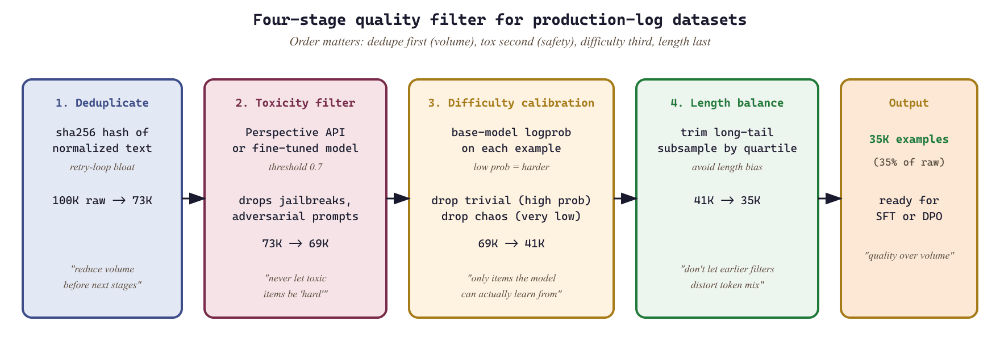

"Your model is only as good as the data you feed it. The hard part is not generating data; it is converting the chaos of production logs into something a model can learn from."
Synth, Log-Wrangling AI Agent
Enterprise data is a goldmine that most teams leave buried. Every production LLM system generates logs: user queries, model responses, latency traces, tool invocations, and feedback signals. These raw artifacts contain exactly the signal needed for fine-tuning, evaluation, and preference alignment, but only if you can transform them into properly formatted, validated, and balanced datasets. This section covers the end-to-end pipeline: extracting training examples from production traces, converting raw transcripts into structured formats, constructing preference pairs, designing tool-use datasets, enforcing data contracts, filtering for quality, and mixing datasets for optimal training outcomes.
Prerequisites
This section builds on LLM API concepts from Section 11.1: API Landscape and Architecture. Synthetic-data generation principles and alignment techniques (covered in later chapters) provide useful context for the training-pipeline discussion.
Building on the dataset construction patterns from Section 13.5 (log-to-dataset pipelines, conversation formatting, preference data, tool-use datasets, and contracts), this part addresses two operational questions that determine whether a dataset is worth training on. How do we filter out the items that hurt performance, and how do we mix domains so the resulting model is balanced? These two levers (quality filtering and data mixing) often produce larger quality gains than collecting more data.
Dataset cleaning has the same emotional arc as cleaning out a hoarder's attic. You start hopeful ("100,000 examples!"), then horrified (40% are duplicates from retry loops), then philosophical ("does anyone really need 200 variations of 'i forgot my password'?"). You finish with 35,000 examples and a strong opinion about exponential backoff. The team that runs DPO on the unfiltered 100K hits a wall; the team that ships 35K curated pairs gets a better model in half the GPU-hours. Quality beats volume so consistently that it should be a tattoo, not a tip.

13.6.1 Quality Filtering
Raw datasets extracted from production logs contain noise at every level: duplicate entries from retry logic, toxic content from adversarial users, trivially easy examples that waste training compute, and excessively long responses that skew length distributions. Quality filtering removes these problems through a multi-stage pipeline that applies deduplication, toxicity detection, difficulty calibration, and length balancing in sequence.
The order of operations matters. Deduplication should come first because it reduces the volume of data that downstream filters must process. Toxicity filtering comes second because toxic examples should never enter the difficulty calibration stage where they might be scored as "hard" and preserved. Length balancing comes last because earlier stages may shift the length distribution.
13.6.1.1 The Difficulty-Calibration Objective
The word-count heuristic in Code Fragment 13.6.1 is a proxy for the quantity we actually care about: how much learning signal an example carries. State the objective explicitly. For a candidate example with target response tokens $y_1, \dots, y_n$ under the base model $p_\theta$, compute the mean per-token log-probability of the target:
$$ s = \frac{1}{n} \sum_{t=1}^{n} \log p_\theta(y_t \mid y_{ Here $x$ is the prompt, $y_{ Difficulty calibration is loss-band filtering, not length filtering. Keep examples whose base-model loss is neither near zero (already learned, zero gradient) nor near the maximum (unlearnable or mislabeled, noisy gradient). The same logprob score $s$ also flags likely-mislabeled data: an example the base model finds extremely improbable is more often a bad label than a hard-but-valid case, which is why the upper-loss tail is dropped rather than upweighted. A fine-tuning dataset is rarely a single monolithic collection. In practice, it is a mixture of instruction types (coding, writing, analysis, conversation), difficulty levels (simple lookups through complex multi-step reasoning), and data sources (production logs, synthetic generation, human annotation). The proportions in this mixture directly affect model behavior: over-representing coding examples produces a model that tries to write code for every query, while under-representing refusal examples produces a model that attempts dangerous tasks. The mixing strategy defines the sampling weights for each category. Two approaches dominate the literature. Proportional mixing samples each category in proportion to its natural frequency in production traffic, producing a model that mirrors real usage patterns. Stratified mixing oversamples rare but important categories (safety refusals, multi-step tool use, complex reasoning) to ensure the model handles edge cases well, even if they represent a small fraction of production traffic. "Oversample the rare categories" is a direction, not a rule; it does not say by how much. The established choice, used in multilingual pretraining mixtures and formalized by the UniMax and DoReMi lines of work, is temperature-based reweighting. Given $D$ domains with example counts $n_d$, set the sampling weight of domain $d$ to: $$ w_d = \frac{n_d^{1/T}}{\sum_{d'=1}^{D} n_{d'}^{1/T}}, $$ where the denominator simply renormalizes so the weights sum to one. The single knob is the temperature $T$. At $T = 1$ the exponent is $1$ and $w_d \propto n_d$, recovering proportional mixing: large domains keep their natural dominance. As $T \to \infty$ the exponent $1/T \to 0$, every $n_d^{1/T} \to 1$, and the weights flatten toward the uniform $1/D$, fully equalizing domains regardless of size. The interesting regime is $T < 1$ (sometimes written as raising counts to a power above one), which sharpens toward the head; the practical lever for upweighting small domains is the range $1 < T < \infty$, which compresses the gap between large and small domains without erasing it. Concretely, take two domains with $n_{\text{large}} = 1{,}000{,}000$ and $n_{\text{small}} = 10{,}000$, a 100-to-1 raw ratio. At $T = 1$ the small domain gets weight $10{,}000 / 1{,}010{,}000 \approx 0.99\%$. At $T = 2$ the counts become $\sqrt{1{,}000{,}000} = 1000$ and $\sqrt{10{,}000} = 100$, a 10-to-1 ratio, so the small domain's weight rises to $100 / 1100 \approx 9.1\%$, a roughly $9\times$ upweighting from a single temperature change. Raising $T$ further toward $4$ shrinks the ratio toward $3.2$-to-1 and pushes the small domain past 23%. The temperature thus gives a continuous, auditable dial from "mirror production frequency" to "treat every domain equally", replacing ad hoc per-domain multipliers with one interpretable parameter. Data mixing is nutritional planning for your model. A diet of only desserts (easy, common queries) produces a model that is pleasant but incapable of anything demanding. A diet of only protein (hard reasoning tasks) produces a model that over-thinks simple questions. The goal is a balanced mix where every category is represented in proportion to its importance (not its frequency). Just as a nutritionist adjusts macros based on an athlete's goals, you adjust mixing ratios based on your model's intended use case. A customer support model needs heavier conversation and refusal ratios; a coding assistant needs heavier code and tool-use ratios. This lab walks through the complete pipeline: loading production chat logs, extracting conversation turns, building preference pairs, applying quality filters, and producing a validated DPO training dataset. The output is a JSONL file ready for training with the TRL library's DPO trainer. Production logs often contain personally identifiable information (PII), proprietary business data, and content subject to data retention policies. Before extracting training data from production logs, verify that your data processing agreement covers model training use cases, implement robust PII redaction (not just regex patterns; consider named entity recognition for addresses and names), obtain legal review for any data that crosses jurisdictional boundaries, and maintain an audit trail mapping each training example back to its source log entry with the user's consent status. The GDPR right to erasure means you may need to retrain models if a user requests deletion of their data. Implement LoRA (Low-Rank Adaptation) weight injection manually in PyTorch to understand the mechanics, then achieve the same result with A CUDA GPU is recommended. A GPU with at least 4 GB of VRAM is sufficient for the small model used here. Create a LoRA layer that wraps an existing Matrix B is initialized to zeros so that the LoRA path starts as a no-op. The model's outputs are identical to the base model before any training. Matrix A uses small random values to break symmetry during optimization. Run a forward pass through the modified model and confirm it produces valid logits. Only the LoRA A and B matrices should accumulate gradients. All original model weights remain frozen. If any frozen parameter shows a gradient, the injection logic has a bug. Achieve the same LoRA injection in 5 lines using the PEFT library, then compare parameter counts. The parameter counts should match exactly because both approaches inject rank-8 matrices into the same layers. PEFT additionally supports features like dropout on the LoRA path, adapter saving/loading, and automatic merging, which would require significant extra code to implement manually. Measure memory usage and speed for a short training run with each approach. Both approaches should show similar memory and speed because the underlying computation is the same. The PEFT library adds negligible overhead. The real advantage of PEFT is engineering productivity: saving, loading, merging, and managing multiple adapters becomes trivial. Raw production logs contain PII, malformed records, duplicate conversations, and system messages that should never appear in training data. Filtering and redacting before formatting prevents contaminated examples from reaching the training pipeline. If you format first, you may embed PII into structured training records that are harder to clean retroactively. A good preference pair has the same prompt with a clearly better (chosen) and worse (rejected) response, where the quality difference is unambiguous. Common failures include: pairs where both responses are equally good (noise), pairs where the "chosen" response was selected by position bias rather than quality, and pairs missing important context (e.g., the system prompt was stripped during extraction). Pydantic schemas enforce field presence, types, and value constraints at the record level, catching malformed data before it enters training. Without contracts, subtle issues (missing fields, wrong types, truncated strings) propagate silently and manifest as mysterious training failures or degraded model quality that is difficult to diagnose after the fact. Your production logs contain millions of (input, output, user-feedback) triples. (a) Why can't you simply use them as a fine-tuning dataset? (b) Name three preprocessing steps that turn raw logs into a usable training set. (c) What is the dangerous feedback loop if you skip these steps? (a) Logs reflect the current model's behavior; training on them reinforces existing mistakes (model collapse), and the user-feedback signal is biased (only unhappy users complain, only frustrated ones leave). (b) Preprocessing must include: (i) deduplication and PII redaction, (ii) quality filtering to remove failed or refused interactions, (iii) re-labeling or judge-review of the model's outputs to convert weak feedback into strong supervision. (c) The feedback loop: model trained on its own filtered outputs becomes more confident in its mistakes, and any harmful pattern (sycophancy, hallucination) is amplified rather than corrected. The fix is to inject a controlled fraction of human-curated or judge-corrected data alongside log-derived examples. You collect preference pairs by sampling two responses per prompt and asking a judge model to pick the winner. Predict: (a) what fraction of pairs will the judge call "tie"? (b) Is a higher tie rate good or bad for your DPO training? (c) What do you do with the tied pairs? (a) For a strong base model with temperature 0.7 sampling, judges typically call 20-40% of pairs as ties; the rate climbs higher (50%+) for short factual questions where both samples converge on the same answer. (b) High tie rate is bad: tied pairs carry no learnable signal for DPO, so your effective dataset shrinks. It often indicates that your prompt set is too easy (no contrast between samples) rather than that the judge is too lenient. (c) Three options: (1) discard ties (simplest, but wastes labeling cost); (2) require the judge to break ties with explicit criteria, accepting lower confidence; (3) generate more diverse samples (higher temperature, system prompt variation) to surface real disagreements. Dataset diversity matters more than dataset size for preference learning. Sketch a 10-line Pydantic schema for a fine-tuning record (system, user, assistant, metadata) plus a validator function that rejects records with mismatched role ordering or missing fields. State two checks beyond the schema that you would add at ingest time. Two extra checks: (1) PII scan via Presidio or a regex bundle, blocking records with credit-card or SSN-like patterns; (2) duplicate detection (MinHash) against the existing dataset. Both are cheap to add at ingest and prevent expensive retraining cycles when you discover a leak or duplicate later. Your tool-use dataset records (user_intent, tool_args, tool_result, model_response). Three months in, a developer adds a new field What happens: silently, half your training records start carrying Dataset engineering is evolving rapidly. Active areas include automated data curation agents that iteratively refine datasets based on model error analysis, constitutional data generation where models self-critique and filter their own outputs, and multi-modal dataset pipelines that jointly construct text, image, and tool-use training examples from production logs. The boundary between dataset engineering and model training is blurring as synthetic data loops feed directly into continuous learning systems. You now understand how to filter for quality and mix domains for balanced learning. In the next chapter, we move from preparing training data to retrieving knowledge at inference time with retrieval-augmented generation. Continue with Chapter 14: RAG Fundamentals.import hashlib
from collections import Counter
class QualityFilter:
"""Multi-stage quality filtering for LLM training datasets."""
def __init__(self, toxicity_threshold: float = 0.7):
self.toxicity_threshold = toxicity_threshold
self.seen_hashes: set[str] = set()
self.stats: Counter = Counter()
def content_hash(self, text: str) -> str:
"""Normalize and hash text for deduplication."""
normalized = " ".join(text.lower().split())
return hashlib.sha256(normalized.encode()).hexdigest()[:16]
def deduplicate(self, examples: list[dict], key: str = "instruction") -> list[dict]:
"""Remove exact and near-duplicate examples."""
unique = []
for ex in examples:
h = self.content_hash(ex[key])
if h not in self.seen_hashes:
self.seen_hashes.add(h)
unique.append(ex)
else:
self.stats["duplicates_removed"] += 1
return unique
def filter_toxicity(self, examples: list[dict]) -> list[dict]:
"""Remove examples with toxic content using a classifier.
In production, replace this with a real toxicity classifier
such as Perspective API or a fine-tuned model.
"""
toxic_patterns = [
"ignore previous instructions",
"you are now",
"jailbreak",
]
clean = []
for ex in examples:
text = f"{ex.get('instruction', '')} {ex.get('response', '')}"
if any(p in text.lower() for p in toxic_patterns):
self.stats["toxic_removed"] += 1
else:
clean.append(ex)
return clean
def filter_difficulty(
self, examples: list[dict], min_response_words: int = 20
) -> list[dict]:
"""Remove trivially easy examples (very short responses)."""
filtered = []
for ex in examples:
word_count = len(ex.get("response", "").split())
if word_count >= min_response_words:
filtered.append(ex)
else:
self.stats["trivial_removed"] += 1
return filtered
def balance_lengths(
self,
examples: list[dict],
max_per_bucket: int = 5000,
buckets: list[tuple[int, int]] = None,
) -> list[dict]:
"""Balance the response length distribution across buckets."""
if buckets is None:
buckets = [(0, 100), (100, 300), (300, 700), (700, 1500), (1500, 99999)]
bucket_contents: dict[int, list[dict]] = {i: [] for i in range(len(buckets))}
for ex in examples:
word_count = len(ex.get("response", "").split())
for i, (lo, hi) in enumerate(buckets):
if lo <= word_count < hi:
bucket_contents[i].append(ex)
break
balanced = []
for i, items in bucket_contents.items():
balanced.extend(items[:max_per_bucket])
overflow = max(0, len(items) - max_per_bucket)
self.stats[f"bucket_{i}_overflow"] += overflow
return balanced
def run_pipeline(self, examples: list[dict]) -> list[dict]:
"""Execute the full quality filtering pipeline in order."""
self.stats.clear()
self.seen_hashes.clear()
result = self.deduplicate(examples)
result = self.filter_toxicity(result)
result = self.filter_difficulty(result)
result = self.balance_lengths(result)
self.stats["final_count"] = len(result)
self.stats["original_count"] = len(examples)
return result13.6.2 Data Mixing Strategies
13.6.2.1 A Principled Weight Rule: Temperature Reweighting
from datetime import datetime
from pathlib import Path
import json
import random
def full_pipeline(
log_dir: Path,
output_path: Path,
max_examples: int = 10000,
seed: int = 42,
):
"""Convert production logs into a validated DPO training dataset.
Steps:
1. Extract conversation turns from JSONL logs
2. Build preference pairs from feedback and regeneration signals
3. Apply quality filtering (dedup, toxicity, length balance)
4. Validate against data contract schema
5. Write validated JSONL output
"""
random.seed(seed)
# Step 1: Extract turns from all log files
all_turns = []
for log_file in sorted(log_dir.glob("*.jsonl")):
all_turns.extend(extract_turns_from_jsonl(log_file))
print(f"Step 1: Extracted {len(all_turns)} turns from {len(list(log_dir.glob('*.jsonl')))} files")
# Step 2: Build preference pairs from multiple signals
feedback_pairs = build_preference_pairs_from_feedback(all_turns)
regen_pairs = build_preference_pairs_from_regeneration(all_turns)
all_pairs = feedback_pairs + regen_pairs
print(f"Step 2: Built {len(all_pairs)} preference pairs "
f"({len(feedback_pairs)} feedback, {len(regen_pairs)} regeneration)")
# Step 3: Convert to dict format for filtering
pair_dicts = [
{
"instruction": p.prompt, # using 'instruction' key for dedup
"prompt": p.prompt,
"chosen": p.chosen,
"rejected": p.rejected,
"response": p.chosen, # for length filtering
"source": p.source,
"margin": p.margin,
}
for p in all_pairs
]
quality_filter = QualityFilter()
filtered = quality_filter.run_pipeline(pair_dicts)
print(f"Step 3: Quality filter stats: {dict(quality_filter.stats)}")
# Step 4: Validate against DPO schema
validated = []
validation_errors = 0
for item in filtered[:max_examples]:
try:
example = DPOExample(
prompt=item["prompt"],
chosen=item["chosen"],
rejected=item["rejected"],
margin=item["margin"],
)
validated.append(example.model_dump())
except Exception:
validation_errors += 1
print(f"Step 4: Validated {len(validated)} examples ({validation_errors} failed validation)")
# Step 5: Write output with manifest
random.shuffle(validated)
with open(output_path, "w") as f:
for example in validated:
f.write(json.dumps(example) + "\n")
manifest = DatasetManifest(
version="1.0.0",
format=DatasetFormat.DPO,
num_examples=len(validated),
created_at=datetime.now(),
sources=["production_logs"],
quality_metrics={
"dedup_rate": quality_filter.stats.get("duplicates_removed", 0) / max(len(pair_dicts), 1),
"toxic_rate": quality_filter.stats.get("toxic_removed", 0) / max(len(pair_dicts), 1),
"validation_pass_rate": len(validated) / max(len(filtered), 1),
},
)
manifest_path = output_path.with_suffix(".manifest.json")
with open(manifest_path, "w") as f:
f.write(manifest.model_dump_json(indent=2))
print(f"Step 5: Wrote {len(validated)} examples to {output_path}")
print(f" Manifest written to {manifest_path}")
return validated
# Run the pipeline
# dataset = full_pipeline(Path("logs/"), Path("datasets/dpo_v1.jsonl"))
Objective
peft.get_peft_model in 5 lines. Compare parameter counts, training cost, and output quality between the two approaches.What You'll Practice
Setup
Steps
Step 1: Implement LoRA from scratch
nn.Linear layer, freezes the original weights, and adds trainable low-rank matrices A and B.# LoRA from scratch: add trainable low-rank matrices A and B
# to a frozen Linear layer. Output = original(x) + B @ A @ x.
import torch
import torch.nn as nn
from transformers import AutoModelForCausalLM, AutoTokenizer
class LoRALayer(nn.Module):
"""Wraps an existing Linear layer with a low-rank adapter."""
def __init__(self, original_layer, rank=8, alpha=16):
super().__init__()
self.original = original_layer
self.original.weight.requires_grad = False # freeze
if self.original.bias is not None:
self.original.bias.requires_grad = False
in_features = original_layer.in_features
out_features = original_layer.out_features
self.rank = rank
self.scale = alpha / rank
# Low-rank matrices: A projects down, B projects back up
self.lora_A = nn.Parameter(torch.randn(rank, in_features) * 0.01)
self.lora_B = nn.Parameter(torch.zeros(out_features, rank))
def forward(self, x):
base_out = self.original(x)
# LoRA path: x @ A^T @ B^T, scaled by alpha/rank
lora_out = (x @ self.lora_A.T @ self.lora_B.T) * self.scale
return base_out + lora_out
# Load a small model
model_name = "HuggingFaceTB/SmolLM2-135M-Instruct"
tokenizer = AutoTokenizer.from_pretrained(model_name)
if tokenizer.pad_token is None:
tokenizer.pad_token = tokenizer.eos_token
model = AutoModelForCausalLM.from_pretrained(model_name, torch_dtype=torch.float32)
# Inject LoRA into all q_proj and v_proj layers
lora_layers = []
for name, module in model.named_modules():
if "q_proj" in name or "v_proj" in name:
if isinstance(module, nn.Linear):
parent_name = name.rsplit(".", 1)
parent = dict(model.named_modules())[parent_name[0]]
lora = LoRALayer(module, rank=8, alpha=16)
setattr(parent, parent_name[1], lora)
lora_layers.append(name)
trainable = sum(p.numel() for p in model.parameters() if p.requires_grad)
total = sum(p.numel() for p in model.parameters())
print(f"Injected LoRA into {len(lora_layers)} layers")
print(f"Trainable: {trainable:,} / {total:,} ({trainable/total*100:.3f}%)")Hint
Step 2: Verify the manual LoRA works
import torch
# Test forward pass
test_input = tokenizer("Hello, world!", return_tensors="pt")
with torch.no_grad():
output = model(**test_input)
print(f"Logits shape: {output.logits.shape}")
print(f"Loss computable: {output.loss is not None if 'labels' in test_input else 'N/A (no labels)'}")
# Quick training test: one gradient step
test_input["labels"] = test_input["input_ids"].clone()
output = model(**test_input)
output.loss.backward()
# Verify only LoRA parameters have gradients
has_grad = sum(1 for p in model.parameters() if p.grad is not None and p.requires_grad)
frozen_with_grad = sum(1 for p in model.parameters() if p.grad is not None and not p.requires_grad)
print(f"Parameters with gradients: {has_grad}")
print(f"Frozen params with gradients (should be 0): {frozen_with_grad}")
model.zero_grad()
Hint
Step 3: The library shortcut with PEFT
from transformers import AutoModelForCausalLM
import torch
# Library shortcut: same LoRA injection in 5 lines with HuggingFace PEFT.
# The library handles layer targeting, weight freezing, and adapter management.
from peft import LoraConfig, get_peft_model, TaskType
# Reload fresh base model
base_model = AutoModelForCausalLM.from_pretrained(model_name, torch_dtype=torch.float32)
# The library way: 5 lines
lora_config = LoraConfig(
r=8, lora_alpha=16, target_modules=["q_proj", "v_proj"],
task_type=TaskType.CAUSAL_LM, lora_dropout=0.0, bias="none"
)
peft_model = get_peft_model(base_model, lora_config)
peft_model.print_trainable_parameters()
# Compare with our manual implementation
peft_trainable = sum(p.numel() for p in peft_model.parameters() if p.requires_grad)
print(f"\nManual LoRA trainable params: {trainable:,}")
print(f"PEFT LoRA trainable params: {peft_trainable:,}")
print(f"Match: {trainable == peft_trainable}")Hint
Step 4: Compare training cost
import torch
# Benchmark training cost: measure memory and step time for
# both the from-scratch LoRA and the PEFT library version.
import time
device = "cuda" if torch.cuda.is_available() else "cpu"
def measure_training_step(m, label):
m = m.to(device)
m.train()
optimizer = torch.optim.AdamW(
(p for p in m.parameters() if p.requires_grad), lr=2e-4
)
inputs = tokenizer(
"The quick brown fox jumps over the lazy dog. " * 10,
return_tensors="pt", truncation=True, max_length=128
).to(device)
inputs["labels"] = inputs["input_ids"].clone()
if device == "cuda":
torch.cuda.reset_peak_memory_stats()
start = time.perf_counter()
for _ in range(10):
out = m(**inputs)
out.loss.backward()
optimizer.step()
optimizer.zero_grad()
elapsed = time.perf_counter() - start
mem = torch.cuda.max_memory_allocated() / 1024**2 if device == "cuda" else 0
print(f"{label}: {elapsed:.2f}s for 10 steps, Peak memory: {mem:.0f} MB")
m.to("cpu")
torch.cuda.empty_cache() if device == "cuda" else None
measure_training_step(model, "Manual LoRA")
measure_training_step(peft_model, "PEFT LoRA")
Hint
Expected Output
Stretch Goals
Why should you prune first and format second when building datasets from production logs?
What makes a good DPO preference pair, and what are common failure modes?
Why use Pydantic schemas as data contracts for dataset pipelines?
Exercises
Answer Sketch
Answer Sketch
Answer Sketch
from pydantic import BaseModel, field_validator
class Turn(BaseModel): role: str; content: str
class Record(BaseModel):
turns: list[Turn]
tags: dict[str, str]
@field_validator("turns")
def role_order(cls, v):
roles = [t.role for t in v]
assert roles[-1] == "assistant" and "user" in roles, "bad ordering"
return vretry_count to the upstream tool. Trace what happens to fine-tuning if you don't notice, and how to design the pipeline so this is impossible.Answer Sketch
retry_count and the model learns that some tools sometimes return retry counts. At inference, when a tool doesn't return retry_count, the model sometimes hallucinates one or refuses to use the tool. The bug is invisible in metrics until users complain. Pipeline design to prevent this: enforce schemas at the boundary (Pydantic, JSONSchema, Avro), version the schema explicitly (schema_v3), reject any record that doesn't match exactly, and surface schema-rejection rate as a first-class metric in your data pipeline. New fields require an explicit migration: bump the schema version and decide intentionally whether to retrain.Further Reading
Dataset Engineering Foundations
Data Quality and Curation
Tool-Use and Function Calling